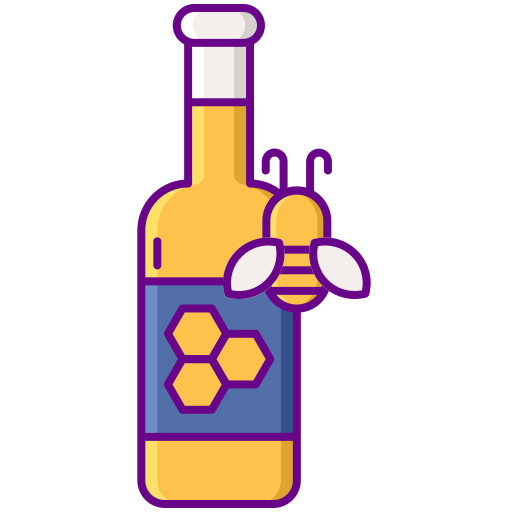

Music Production
I have been producing music teaching myself along the way as a side hobby for about six years on the DAW software Fl Studio. Most of my tracks are primarily hip hop based and I also enjoy sampling and editing vocals. Here are some of my tracks down below feel free to listen and critique 😅

Mead Brewing
Brewing mead is also something I enjoy. Mead is a traditional drink that has been passed down for generations by humans and I will do the same and master this process eventually. Save the bees.